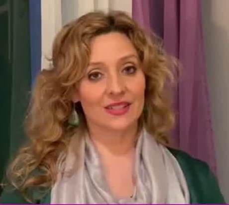
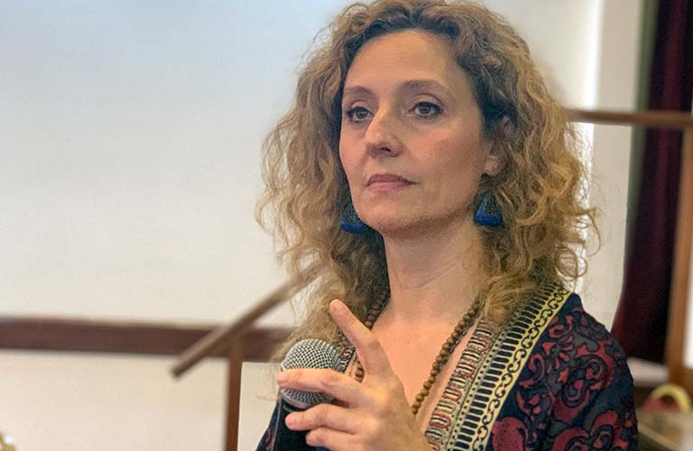

Dra. Veronica Molina
Formación Académica
- Médica, psicoterapeuta integrativa, especialista en terapia familiar y psicotrauma.
- Medica recibida en 1999 en UCC.
- Residencia en medicina interna 2000- 2001 Clínica Caraffa, Córdoba. Residencia completa en Cardiología UBA SAC del Hospital Alemán de Buenos Aires (2001-2004).
- Realizó estudios de Medicina Psicosomática en la Universidad de Aachen (RWTH-Alemania) en 1997-1998 y 2002.
- Diplomada Universitaria en Psicología de la Emergencia (Asoc Argentina de Salud Mental UNC).
- Diplomada Universitaria en Terapia sistémica y de pareja (Asociación Argentina de Salud Mental UNT).
- Formación completa en Experiencia Somática de Peter Levine y Teoría Polivagal (Asoc Brasilera de Trauma Somatic Expieriencing Trauma Institute).
- Formada en Terapia Gestalt en la visión integrativa de Claudio Naranjo y los programas SAT.
- Formada en Teoría del Apego desde una perspectiva Psicoanalítica.
- Formada en Trauma de desarrollo desde un enfoque somático y psicodinámico.
- Formada en APA en Psicosomática Psicoanalítica (2008).
- Actualmente cursando el 3 año de formación y supervisión como Facilitador en grupos Trabajo de Trauma Colectivo con Thomas Hübl reconocido por la Witten/Herdecke Universität(USA/ALEMANIA)
- Especializada en el abordaje sistémico según Bert Hellinger 2006- 2008 (Centro Bert Hellinger Argentina).
Actividad académica, clínica y de investigación
- Trabajo de investigación sobre trauma transgeneracional, genocidios no reconocidos y sus huellas en los descendientes seleccionados por CLACSO 2023-2025. Colaboración interdisciplinaria en curso.
- Desde 2014 brinda seminarios de capacitación sobre Trauma a terapeutas, psicólogos y médicos y a la comunidad en general.
- Colaboro con el Ministerio de Salud de la Ciudad de Buenos Aires capacitando a los equipos de salud Mental en el abordaje somático del trauma durante 2020.
- Dirigió y coordino grupos de escucha y prevención del burn out y trauma vicario para los trabajadores de la salud en la pandemia durante 2020 y 2021 en coordinación con el Ministerio de Salud de GCBA.
- Anfitriona y organizadora de Jornadas Internacionales de Salud, Síntomas y Trauma 2020 (con la participación de expertos en el área de Salud y Trauma de Argentina, Alemania y Brasil).
- Participo en la cumbre de trauma colectivo 2021 como expositora en línea.
- Participo en la cumbre Española de Trauma 2022 y 2023 sobre trauma de desarrollo y trauma en adolescencias.
- Participa anualmente en congresos en Argentina (APSA Y AASM) presentando el trabajo sistémico y el abordaje del trauma en ámbitos académicos.
- Supervisora y conferencista, dirige el Instituto de Constelaciones Familiares y Abordaje del Trauma, espacio de asistencia, docencia e investigación en Buenos Aires/Argentina.
- Directora de los siguientes Diplomados y Especializaciones • Diplomado Internacional en Constelaciones Familiares Integrativas con orientación en Trauma Trifocal.
- Especialización Internacional en Terapia Trifocal del Trauma.
- Especialización en Abordaje Integrativo y Sistémico de la Salud.
- Miembro de la Fundación de Constelaciones Familiares de Argentina y de su Consejo Académico.
- Miembro de la Asociación Española de Constelaciones Familiares.
- Miembro de la Asociación Argentina de Salud Mental y Federación Mundial de Salud Mental.
- Miembro del capítulo de Trauma en la AASM. • Miembro de la Sociedad Argentina de Medicina del Stress
Contamos con un equipo con experiencia y profesionalismo, continuamente capacitado, con un enfoque integral que se compromete con un acompañamiento respetuoso, responsable y ético
ConocenosMas información Contacto